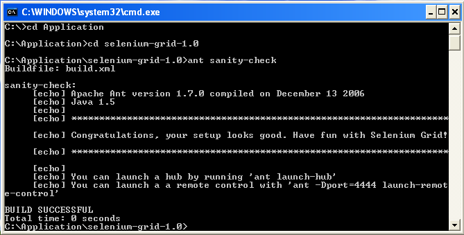

Here are detailed, step by step instructions, on how to install Selenium Grid on an Windows machine.
Ensure that the JDK 1.5 is installed on your machine. Open a terminal window
(DOS Prompt) and run the following command to check your version
java -version

If the JDK is not installed or it is not the correct version please goto the following site to download
Check that you have the right Ant version (1.7) by running in a terminal:
ant -version
If Ant version 1.7 is installed you can go directly to step 3; otherwise, you will need to download Ant version 1.7 as described in the next step
Once it has been downloaded, unzip the file in a
directory on your local system. For instance under
C:\Applications\Java\apache-ant-1.7.1:
You then need to modify your PATH so that your
system picks up the right Ant launcher. Right click on the My
Computer icon and edit the system enviroment variables.
PATH system variable to see the
current PATH


PATH variable file
C:\Applications\Java).
We will refer to the directory where Selenium Grid is installed as
"Selenium Grid Home". For instance if you unzipped the distribution
within C:\Applications\Java, your Selenium Grid Home is
C:\Applications\Java\selenium-grid-1.0.4.
Verify the Selenium Grid install: from the terminal window
go to the Selenium Grid home directory and run:
ant sanity-check

If the build is successful, you are all set!